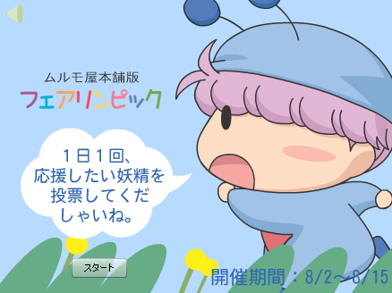
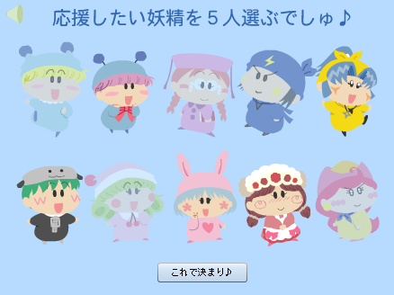
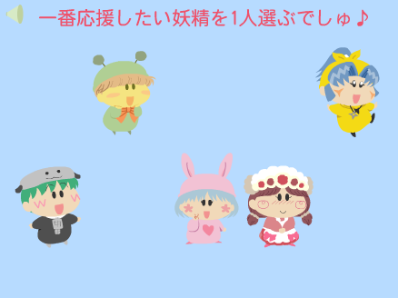
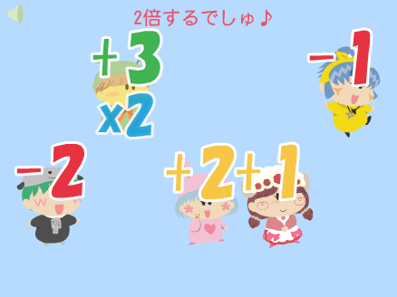
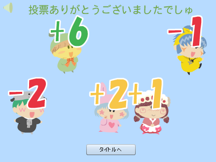
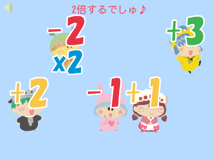

すでに２００９年を迎え、北京オリンピックも懐かしいイベントになりつつありますが、『ムルモ屋本舗版 フェアリンピック』を続けます(^^;。
今回はフェアリンピック一番の目玉かつ過酷な競技である妖精マラソンを想定し（１１４話「涙のゴール」参照）、投票もFlashによる特別版で行いました。出場する妖精はフェアリンピック(1)の記事で上位１０位までの妖精１０人（予選通過）。ルールは皆さんにて１日１回応援したい妖精５人を選んで投票していただく単純なものですが・・・。

タイトル画面。

応援したい妖精を５人選びます。

さらに一番応援したい妖精を一人選びます。

選んだ妖精に１点、２点、３点、－１点、－２点がランダムに入ります。

一番応援したい妖精はなんと点数が２倍に！！

しかし運が悪いと、－２点が２倍になったりもします。。。
投票は８月２日から８月１５日まで、計１４日間で行いました。終盤は大逆転も可能とするため、それぞれの点数をさらに２倍にしたりもしました。それでは最終的な順位を以下に発表します。
１０位：アンナ（８９点）
途中までは結構上位にいましたが、終盤大失速して大差負け…。
読書もほどほどに、外で運動もしましょう。
９位：センリ（１２６点）
最後尾を独走していましたが、センリくんファンの後押しで一時は６位まで浮上！
アンリも自分のことのように喜んでいそうです。
８位：アクミ（１２７点）
７位のソフトと同点ですが、予選の順位によりアクミが下位になりました。
アクミはこの順位に納得しないだろうなぁ。
７位：ソフト（１２７点）
まさに誰もがびっくりの好成績！
ソフト本人はよく分かっていないかもしれないけど。
６位：リルム（１３２点）
６位～９位の大激戦を持ち前の気迫で一歩リードしました。
ミルモと一緒に走れなかったのを残念に思っていそうです。
５位：ネズミ（１５０点）
ネズミの人気はここでも健在！
彼の実力ならもっと前に行きそうですが、ヤマネに前を譲ったのかな。
４位：パピィ（１９０点）
ムルモたち先頭集団にだいぶ離されてしまいました。
「ムルモに負けるなんて…くやちい！」とものすごく悔しがっていそう。
３位：ヤマネ（２４１点）
毎日順位が入れ替わるトップ３。
ミルムル兄弟の気迫にヤマネは思わず後ずさりしたのでしょうか。
２位：ミルモ（２４２点）
ムルモの後ろ姿を見ながらゴール・・・。
ミルモは納得しないでしょうが、やはり主人公の人気は相当のもの！
１位：ムルモ（２５２点）
サイトの主役が劇的な勝利を収めました！
いったいどんなずるがしこい手を・・・いえ、やっぱりムルモの人気による結果ですね。
「ボクが一番でしゅ～っ」
ぶりっこでスタジアムはものすごい大歓声に包まれました。
皆さんからたくさんの投票により、すごく盛り上がった２週間となりました。投票いただいた皆様、ありがとうございました。Flash作りは大変だったけれど、たまにはこういう企画も面白いですね。
まだ先ですが、２０１０年の冬のオリンピックでもまた新たな投票企画を行いたいと思っています。その他またいろいろ考えていきますので、皆さんご参加のほどよろしくお願いいたします。
ミルモ＆ムルモ＆ヤマネ(2)

妖精マラソンの表彰台シーンを描いてみました。シドニーオリンピックのマラソン金メダルみたく、金メダルを噛もうとするムルモです。でも妖精界のことだからメダルもチョコで出来ていて、噛んだらパキッと割れてしまったりして・・・。
絵の方は斜め見下ろしアングルが難しくて、いつも以上に時間がかかってしまいました。それと描いてから気がついたのですが、１１４話の妖精マラソンでは妖精たちはジャージを着ていなかったですね(^^;。ジャージ姿のヤマネを描きたかったばっかりに思いっきり間違えてしまいました。
(2009/1/9)